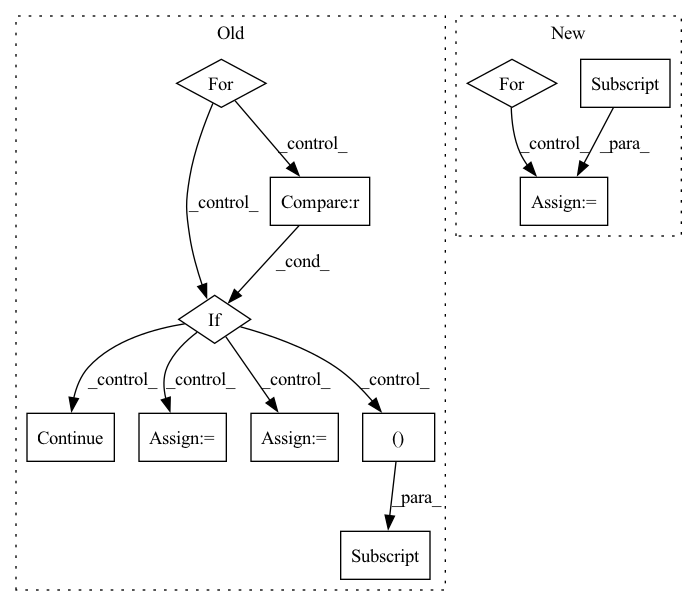

Pattern ID :3795
Before Change
def sample_iter(self):
for path in tqdm(self.raw_paths, desc="Files"):
molecules = list(h5py.File(path).values())
for mol in tqdm(molecules, desc="Molecules", leave=False):
z = pt.tensor(mol["atomic_numbers"], dtype=pt.long)
fq = pt.tensor(mol["formal_charges"], dtype=pt.long)
q = fq.sum()
for conf in mol["conformations"].values():
// Skip failed calculations
if "formation_energy" not in conf :
continue
assert conf["positions"].attrs["units"] == "Å"
pos = pt.tensor(conf["positions"], dtype=pt.float32)
assert pos.shape == (z.shape[0], 3)
assert conf["formation_energy"].attrs["units"] == "eV"
y = pt.tensor(conf["formation_energy"][()] , dtype=pt.float64)
assert y.shape == ()
assert conf["forces"].attrs["units"] == "eV/Å"
dy = -pt.tensor(conf["forces"], dtype=pt.float32)
assert dy.shape == pos.shape
assert conf["partial_charges"].attrs["units"] == "e"
pq = pt.tensor(conf["partial_charges"], dtype=pt.float32)
assert pq.shape == z.shape
assert conf["dipole_moment"].attrs["units"] == "e*Å"After Change
assert self.subsample_molecules > 0
for path in tqdm(self.raw_paths, desc="Files"):
h5 = h5py.File(path)
assert h5.attrs["layout"] == "Ace"
version = h5.attrs["layout_version"]
mols = None
load_confs = None
if version == "1.0":In pattern: SUPERPATTERN
Frequency: 3
Non-data size: 11
Instances Fragment ID: 14209659
Project Name: torchmd/torchmd-net
Commit Name: d23e6500f2cef1fa56d6c99ce5fdb983f1379bca
Time: 2022-10-28
Author: peastman@stanford.edu
File Name: torchmdnet/datasets/ace.py
M Class Name: Ace
N Class Name: Ace
M Method Name: sample_iter(2)
N Method Name: sample_iter(1)
M Parent Class: Dataset
N Parent Class: Dataset
M File Name: torchmdnet/datasets/ace.py
N File Name: torchmdnet/datasets/ace.py
M Start Line: 72
M End Line: 123
N Start Line: 144
N End Line: 206
Before Change
def sample_iter(self):
for path in tqdm(self.raw_paths, desc="Files"):
molecules = list(h5py.File(path).values())
for mol in tqdm(molecules, desc="Molecules", leave=False):
z = pt.tensor(mol["atomic_numbers"], dtype=pt.long)
fq = pt.tensor(mol["formal_charges"], dtype=pt.long)
q = fq.sum()
for conf in mol["conformations"].values():
// Skip failed calculations
if "formation_energy" not in conf :
continue
assert conf["positions"].attrs["units"] == "Å"
pos = pt.tensor(conf["positions"], dtype=pt.float32)
assert pos.shape == (z.shape[0], 3)
assert conf["formation_energy"].attrs["units"] == "eV"
y = pt.tensor(conf["formation_energy"][()] , dtype=pt.float64)
assert y.shape == ()
assert conf["forces"].attrs["units"] == "eV/Å"
dy = -pt.tensor(conf["forces"], dtype=pt.float32)
assert dy.shape == pos.shape
assert conf["partial_charges"].attrs["units"] == "e"
pq = pt.tensor(conf["partial_charges"], dtype=pt.float32)
assert pq.shape == z.shape
assert conf["dipole_moment"].attrs["units"] == "e*Å"After Change
assert self.subsample_molecules > 0
for path in tqdm(self.raw_paths, desc="Files"):
h5 = h5py.File(path)
assert h5.attrs["layout"] == "Ace"
version = h5.attrs["layout_version"]
mols = None
load_confs = None
if version == "1.0": Fragment ID: 14209661
Project Name: torchmd/torchmd-net
Commit Name: d23e6500f2cef1fa56d6c99ce5fdb983f1379bca
Time: 2022-10-28
Author: peastman@stanford.edu
File Name: torchmdnet/datasets/ace.py
M Class Name: Ace
N Class Name: Ace
M Method Name: sample_iter(2)
N Method Name: sample_iter(1)
M Parent Class: Dataset
N Parent Class: Dataset
M File Name: torchmdnet/datasets/ace.py
N File Name: torchmdnet/datasets/ace.py
M Start Line: 72
M End Line: 123
N Start Line: 144
N End Line: 206
Before Change
det_ignore = torch.zeros((nb_iou_thrs, nb_det), dtype=torch.bool, device=self.device)
if torch.numel(ious) > 0:
for idx_iou, t in enumerate(self.iou_thresholds):
for idx_det, _ in enumerate(det):
m = MeanAveragePrecision._find_best_gt_match(t, gt_matches, idx_iou, gt_ignore, ious, idx_det)
if m == -1 :
continue
det_ignore[idx_iou, idx_det] = gt_ignore[m]
det_matches[idx_iou, idx_det] = 1
gt_matches[idx_iou, m] = 1
// set unmatched detections outside of area range to ignore
det_areas = compute_area(det, iou_type=self.iou_type).to(self.device)After Change
best_matches != -1, gt_ignore[best_matches.clamp(max=gt_ignore.shape[0] - 1)], _zero_tensor
)
det_matches = torch.where(best_matches != -1, _one_tensor, _zero_tensor)
for idx in range(nb_iou_thrs):
gt_matches[idx, best_matches[idx].clamp(0, max=gt_matches.shape[1] - 1).unique()] = 1
// set unmatched detections outside of area range to ignore
det_areas = compute_area(det, iou_type=self.iou_type).to(self.device) Fragment ID: 14209650
Project Name: pytorchlightning/metrics
Commit Name: eacfd2fcd4521fb3c69bcb53e5b1be9117c8a163
Time: 2022-10-12
Author: 46073029+stancld@users.noreply.github.com
File Name: src/torchmetrics/detection/mean_ap.py
M Class Name: MeanAveragePrecision
N Class Name: MeanAveragePrecision
M Method Name: _evaluate_image(6)
N Method Name: _evaluate_image(6)
M Parent Class: Metric
N Parent Class: Metric
M File Name: src/torchmetrics/detection/mean_ap.py
N File Name: src/torchmetrics/detection/mean_ap.py
M Start Line: 578
M End Line: 626
N Start Line: 568
N End Line: 622